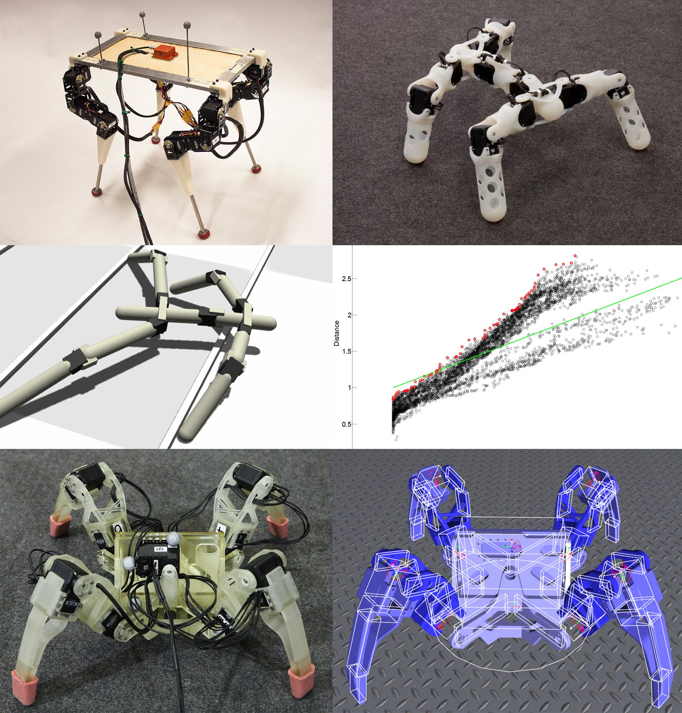
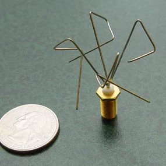
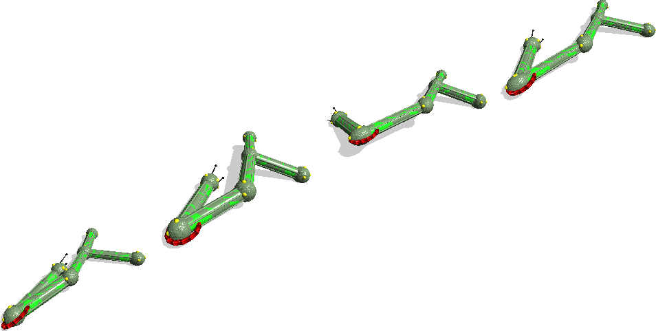

 Celem niniejszego artykułu jest przybliżyć dziedzinę robotyki ewolucyjnej (ang. evolutionary robotics). Jest to dział robotyki z pogranicza inżynierii i nauki, wykorzystujący radykalnie alternatywne podejście do projektowania robotów, mianowicie ewolucję. Zasadnicza idea polega na tym, by roboty nie tyle projektować, co ewoluować. Co to znaczy, na czym to polega i czemu to służy?
Wyjaśnienie można rozpocząć od wskazania różnicy między ewolucją a “inżynierskim” procesem projektowania, tradycyjnie stosowanym przez ludzkich projektantów. Ludzie zwykle budują rozwiązanie, celowo rozbijając (analizując) problem na coraz mniejsze i łatwiejsze podproblemy i następnie scalając (syntetyzując) ich podrozwiązania. Często określenia tej metody to: odgórna (ang. top-down), dziel i rządź. np. Projektując samochód, zauważamy, że potrzebuje napędu, kierowania, i wielu innych; następnie rozwiązujemy problem napędu: zauważamy, że silnik potrzebuje paliwa, mechanizmu rozruchowego, ... ; i tak do coraz mniejszych szczegółów.
W przeciwieństwie do powyższego, ewolucja to proces projektowania przyrostowy, oddolny i całościowy. Rozpoczyna od minimalnego ale już funkcjonującego jako całość układu (organizmu, mechamizmu, itp.) i następnie go usprawnia, zwykle przez rozbudowę o nowe i/lub bardziej złożone mechanizmy. Ewolucja to także proces organiczny, bez świadomego planu, kierowany tylko dążeniem do coraz większej sprawności (przystosowania). Źródłem przyrostu są akumulujące się losowe zmiany, które utrwalają się, jeśli są korzystne.
Ewolucja znajduje zastosowanie w robotyce, ponieważ rozwiązuje problemy, z którymi ludzcy projektanci mają olbrzymie trudności; w szczególności problemy, gdzie występuje złożoność, tj. wiele części, które wzajemnie od siebie zależą i zachowują się inaczej niż w izolacji, a więc nie poddają się klasycznej analizie na części. W swej bezmyślności proces ewolucyjny znajduje ich rozwiązania. Nie opiera się na analizie – czasem bardzo trudnej – a niepowstrzymanie tworzy i testuje wielką liczbę wariantów wcześniej działających egzemplarzy. Ewolucja nie boi się złożoności i sama często projektuje odpowiednio złożone rozwiązania.
“Ewolucja znajduje zastosowanie” to nieprzypadkowy zwrot – ewolucja to technika, którą się stosuje, rozmyślnie powoduje się jej wystąpienie. Ewolucja to bardzo ogólne zjawisko, które zachodzi zawsze, gdy spełnione są trzy warunki:
W konsekwencji tych trzech procesów, w populacji egzemplarzy występuje trend ku coraz sprawniejszym egzemplarzom. Te egzemplarze powielają się częściej, a więc ich udział w populacji wzrasta. Losowe zmiany przy powielaniu się od czasu do czasu generują jeszcze sprawniejsze egzemplarze, które znów wypierają wcześniejsze. W świecie organizmów żywych ten proces nosi miano selekcji naturalnej. Proces jest jednak dużo ogólniejszy. Nie ogranicza się do natury, występuje powszechniej, m. in. w kulturze (świecie wytworów) człowieka, w nauce, w technologii, w biznesie.
W robotyce ewolucję wywołuje się, symulując komputerowo populację robotów oraz ich reprodukcję, wariację i selekcję. W każdym kroku symulacji generowane jest kolejne pokolenie robotów. Symuluje się wszystkie roboty, ocenia ich sprawność i następnie powiela się te najsprawniejsze, z częstotliwością proporcjonalną do oceny sprawności i z losowymi zmianami. Sprawność oceniana jest pod kątem problemu, który ewolucja ma rozwiązać, tj. umięjętności, którą robot na nabyć. np. Jeśli problem to żeby robot umiał chodzić, ocena sprawności to np. jak długo / jak daleko robot zaszedł w testowej symulacji. Kryterium oceny dobiera się celowo. To ono wprowadza presję selekcyjną (selekcję sztuczną) na pożądaną umiejętność czy ogólniej charakterystykę robota.
 Warto dodać, że powyższy algorytm ewoluowania rozwiązań poprzez symulację reprodukcji, wariacji i selekcji nie ogranicza się do robotów. Taki algorytm nazywa się ogólnie algorytmem genetycznym i stosuje się w różnych problemach konstrukcyjnych, optymalizacyjnych, itp. np. NASA wykorzystała algorytm genetyczny do wyewoluowania anteny o parametrach, których ludzcy projektanci nie byli w stanie osiągnąć.
Oprócz powyższego zastosowania inżynierskiego, robotykę ewolucyjną wykorzystuje się również w nauce – w badaniach nad umysłem, inteligencją, językiem, zdolnościami poznawczymi, itp. Pewni badacze uważają, że zrozumienie tych zjawisk bezpośrednio i w obecnej, rozwiniętej postaci jest nieosiągalne. Jako produkty ewolucji, są one bardzo złożone, mają też strukturę bardzo odmienną od wytworów ludzkiego procesu projektowego. Zamiast tego, próbują badać ich powstanie; w szczególności próbują odtworzyć ich ewolucję w symulacji. Nawiązuje to do słynnego powiedzenia T. Dobzhansky'ego “Nothing in biology makes sense except in the light of evolution”. np. Istnieją badania nad powstaniem języka u ludzi, w których ewoluuje się roboty do (z oceną sprawności na podstawie) zadania wymagającego współpracy, licząc, że roboty wyewoluują pierwotne formy komunikacji. Dałoby to bardzo szczegółowy wgląd w możliwy scenariusz początków języka.
 W pokrewnej dziedzinie sztucznego życia (ang. artificial life) symuluje się ewolucję wirtualnych stworzeń, w podobnej nadziei na odtworzenie początków inteligencji i złożonych form życia.